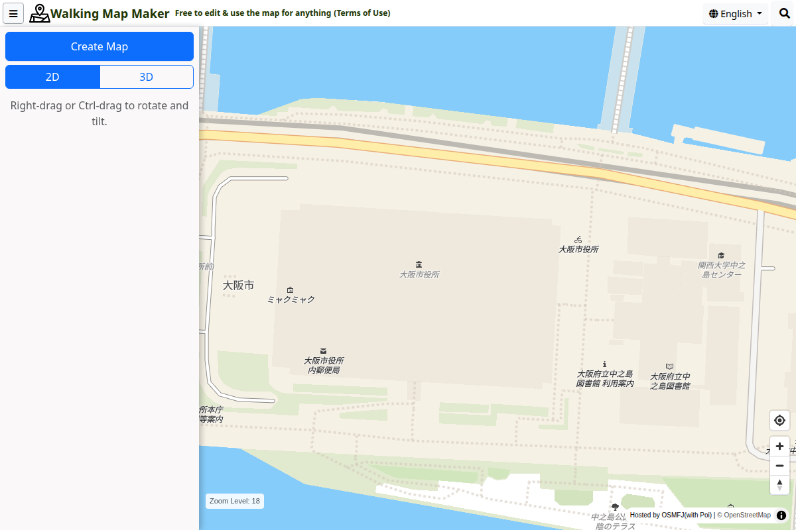
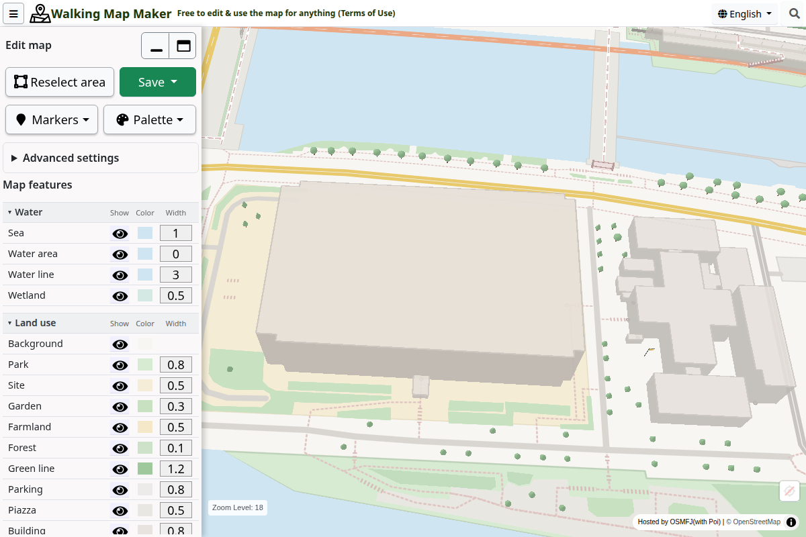
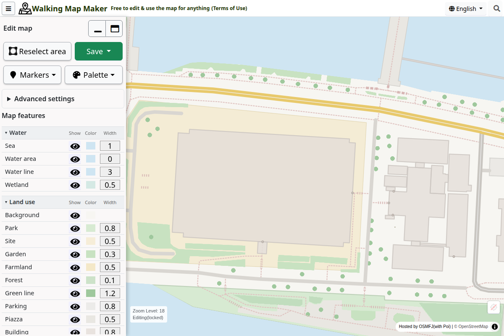
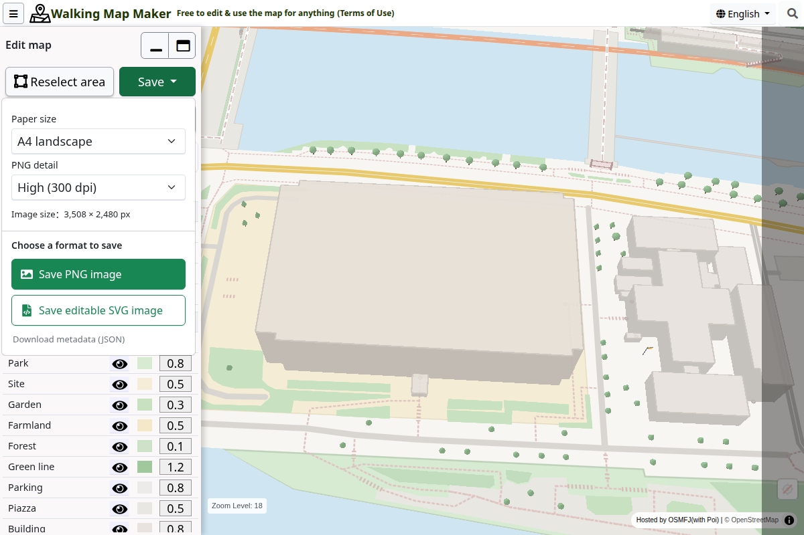

WALKING MAP MAKER / USER GUIDE
Make a map
of your own.
Create 2D and 3D map images for free. Choose a location and view, adjust the colors and features, then save your map as PNG or SVG.
Screenshots show the desktop interface. On smartphones, the main controls appear at the bottom of the screen.
STEP 01
Find a location
Select the magnifying glass at the top right, enter an address, and select “Search”. Address search supports locations in Japan only. If an address is not found, or you want a location outside Japan, move the map directly.
Drag to move around. Use the mouse wheel or the “+” and “−” buttons to zoom. On a smartphone, drag with one finger to move and pinch with two fingers to zoom.


STEP 02
Choose a 2D or 3D view
“2D” gives you a view from directly above. “3D” tilts the map. Choose a view and adjust the position and zoom before creating your map.
- Desktop: drag with the right mouse button, or hold Ctrl while dragging, to rotate and tilt.
- Smartphone: use the 2D and 3D buttons to change the tilt. Rotate two fingers on the map to change its direction.
The view is locked once you create the map. To change the location, direction, or tilt, save any images you need first, then select “Reselect area” to return to the location selection screen.
STEP 03
Select “Create Map”
Zoom in until the “Create Map” button is available, then select it. Once the map data has loaded, the editing controls appear so you can change road and building colors.


Maps created in 2D use the same controls for colors and visible features.
STEP 04
Customize the map
Choose a palette
Open “Palette” and choose a color, monochrome, or coloring palette. Choosing an overall palette first makes it easier to start customizing.
Adjust roads and buildings
Under “Map features”, use the eye icons to show or hide features, the colored squares to change colors, and the number fields to adjust line width.
Add markers
Open “Markers” to choose facility icons or pins. You can add text to a location pin, such as the name of a meeting point.
Change the appearance
Open “Advanced settings” to choose a hand-drawn style or a season. The “3D view” switch controls the three-dimensional display of buildings and other features. It does not change the camera tilt.


STEP 05
Save as PNG or SVG
Open “Save” and choose a “Paper size”. You can use “Current view” or an A4 or A3 size in portrait or landscape orientation. Check the highlighted export area, then choose a file format.
| Format | Use it to | Button |
|---|---|---|
| PNG | Add a map image to a document or slide | Save PNG image |
| SVG | Edit lines and shapes further in compatible software | Save editable SVG image |
For PNG files, you can also choose “PNG detail”. If saving takes too long, try a lower detail setting or create a map of a smaller area.


Keep the map attribution when sharing or publishing your images. For details, open “User Guide & Map Terms” in the map application’s menu.
Using a smartphone
Before you create a map, “Create Map” and the 2D and 3D buttons appear at the bottom of the screen. After creation, “Reselect area” and “Save” appear there instead. Select “Adjust” to open the editing settings.
If the settings panel covers the map, use the handle at the top of the panel to resize or minimize it. If the buttons are not visible, open the page in a browser such as Chrome or Safari.
Troubleshooting
The “Create Map” button is unavailable
Zoom in further. Zooming in also makes more types of map features available.
Some roads or buildings are missing
Try zooming in and creating the map again. The map also depends on what is recorded in OpenStreetMap, so not every real-world feature will necessarily appear.
Map data fails to load
Check your connection and the error message on screen. If a large area fails to load, zoom in to a smaller area and try creating the map again.
I want to change the location or view
Save any images you need, select “Reselect area”, and confirm. Your edits and added markers will be reset.
Can I save my edits and resume them on this site later?
PNG and SVG files are exported map images, not project files that can be reopened for editing on this site. Save the images you need before finishing your session.
Ready to make your map?
Start with a small area around a familiar place and try 2D first to get used to the controls.
Open Walking Map Maker